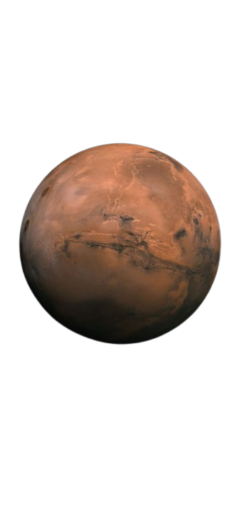
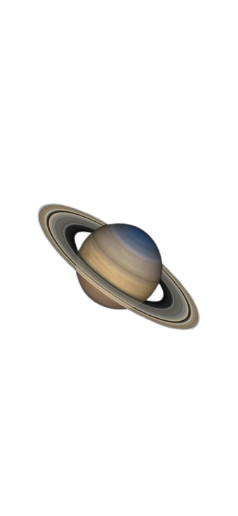

JUPITER
The Giant of the Solar System
Mass: 318 Earths
Distance from Sun: 484 million miles
Composition: Hydrogen and Helium
Surface Temp: -145°C
Moons: 95
Diameter: 139,820 km
Orbital Period: 11.86 Earth years
Rotation Period: 9.9 hours
Atmosphere: Mostly Hydrogen and Helium
Notable Feature: Great Red Spot

Previous Planet
END TOUR

Next Planet